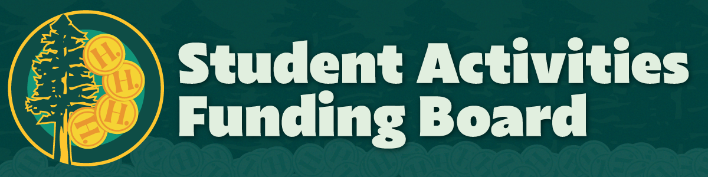
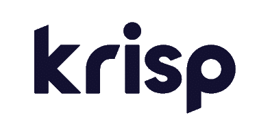
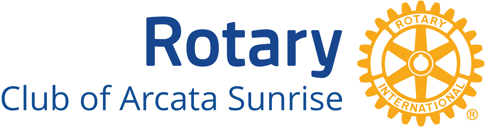

Club Activities
Thank you to all who participated
About the Hackathon
This year's competition presents a unique opportunity for students across all academic disciplines to collaborate on real-world tech challenges submitted by local nonprofit organizations. Every project completed will directly support the local Humboldt community, making this a chance to apply your skills for a meaningful cause.
Event Details
Total design and programming time: 22 hours spread across two days, with a kickoff event before hand...
- Kickoff Event: Thursday, March 6th from 6:00 PM - 7:30 PM in BSS 166 (required for participants)
- Competition begins: Saturday, March 8th from 8:00 AM - 10:00 PM and continues on Sunday, March 9th from 8:00 AM - 7:00 PM in Harry Griffith Hall.
Team Details
Whether you're a programmer, artist, entrepreneur, or someone else eager to contribute your talents, you'll have the ability to apply your skills for a meaningful cause.
- Team Size: 2 to 5 people, all majors welcome.
- Team Composition: We require at least one student with programming experience on a team.
- No team? No problem: we'll help you find one!
Thank you to our Sponsors!
- 
- 
- 
-
Cyril Oberlander
-
Warner Tillman
-
John Wegis
-
Joyce West
Judges
Meet the judges who will be evaluating the projects and awarding prizes!
-

Sharon Tuttle
Cal Poly Humboldt
Sharon is a long-time Computer Science professor at Cal Poly Humboldt, and feels that computer science has a great potential to be a source of social good. She is delighted that the CS Club's Hackathon is focusing on this potential.
-

Casey Hefner
Cal Poly Humboldt - ITS
Casey has worked in technology for over a decade, most recently serving as a Sysadmin on campus. In addition to his tech career, Casey is dedicated to community service, volunteering with Planned Parenthood and distributing harm reduction supplies.
-

Bob Schoenfield
Krisp Technologies, Inc.
Bob is an early-stage technology professional, serving as the founding COO and current EVP at Krisp, a leading Voice AI company. His work focuses on driving innovation and growth in the AI and technology space.
-
David Tuttle
Cal Poly Humboldt
-
Ben Kovitz
Cal Poly Humboldt
-
Shannon Whitmore
Illumina
Mentors
Meet the mentors who will be available to help contestants with their projects!
-

Edwin Espinoza
Cal Poly Humboldt
Edwin has experience in developing cloud software and approaches programming with a positive and open mindset. He is passionate about leveraging technology for social good, recognizing that social good is something that is often neglected in the technology space.
-

Siri Varma Vegiraju
Microsoft
Siri Varma Vegiraju is a seasoned expert in healthcare, cloud computing, and security. Currently, he focuses on securing Azure Cloud workloads, leveraging his extensive experience in distributed systems and real-time streaming solutions. Prior to his current role, Siri contributed significantly to cloud observability platforms and multi-cloud environments. He has demonstrated his expertise through notable achievements in various competitive events and as a judge and technical reviewer for leading publications. Siri frequently speaks at industry conferences on topics related to Cloud and Security and holds a Masters Degree from University of Texas, Arlington with a specialization in Computer Science.
-

Tara Strickwerda
StreamGuys
A customer success leader with over 25 years of experience delivering simple to complex solutions across multiple industries, many of them Humboldt-based. A problem solver by nature and by education, Tara earned a Bachelor's degree in Mathematics at Humboldt State University (now Cal Poly Humboldt); translating her equation solving skills to solve real world problems faced by clients and organizations.
-

Anthony Cavuoti
Remnant Entertainment LLC
A recent Cal Poly Humboldt alumnus, Anthony is a creative game and web developer, driven by innovation, problem-solving, and a passion for crafting meaningful digital experiences.
-
John Wegis
GenomeMedical and Cal Poly Humboldt
John is a Principal Software Engineer at GenomeMedical with over 25 years of experience in full-stack development, backend engineering, and software architecture. His expertise includes Python, Flask, FastAPI, distributed systems, and cloud technologies. In addition to his industry work, John teaches CS 357 - Software Project Management at Cal Poly Humboldt, where he mentors students in software engineering best practices, Agile methodologies, and real-world project execution. He's passionate about innovation and education, and enjoys guiding teams through technical challenges to build scalable, impactful solutions.
-
Todd Chittenden
Five9
Todd has been in the telecommunications industry for 29 years, starting as a technician and has worked his way to become an architect. His journey reflects both his broad experience and his sense of humor.
-
Clay McGlaughlin
College of the Redwoods / Humboldt County Office of Education
Clay has been working in the IT field for over 20 years, starting as a user support analyst at a university and working his way up to director of IT for a Humboldt nonprofit. He currently teaches Computer Information Systems classes at College of the Redwoods as well as intro to computer programming for HCOE.
-
Sean Haas
Libsyn, Inc.
-
Michael Crispin
Cal Poly Humboldt